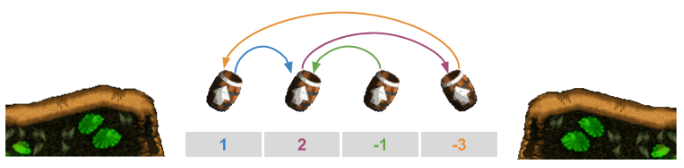
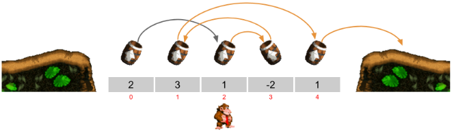
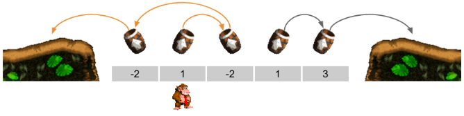

En el juego Donkey Kong hay unos "barriles cañón" que disparan al gorila cuando cae sobre uno de ellos. Hay veces en los que caes sobre un barril y éste te dispara y vas a caer a otro barril, que a su vez te dispara sobre otro barril, y así sucesivamente hasta que vuelves a caer sobre tierra.
En esta versión, los barriles estan situados uno al lado de otro y cada barril dispara al gorila hacia arriba a la izquierda o hacia arriba a la derecha (describiendo una parábola).
Cada barril lo dispara con una fuerza, que se representa con un número. Este número indica cuántas posiciones proyectará al gorila. Si el número es positivo hacia la derecha, y si es negativo hacia la izquierda. Se puede observar en la siguiente imagen:

El problema consiste en: dadas la fuerzas de unos barriles y el barril donde cae inicialmente el gorila, averiguar si el gorila terminará saliendo por la IZQUIERDA, por la DERECHA, o si se quedará en un BUCLE sin poder salir.
Input Format
El primer número indica la cantidad de barriles.
A continuación vienen los números que indican la fuerza de cada barril.
El último número indica la posición de Donkey Kong (el primer barril en el que cae).
Constraints
-
Output Format
{ IZQUIERDA | DERECHA | BUCLE }
Sample Input 0
52 3 1 -2 12
Sample Output 0
DERECHA
Explanation 0
La posición de DK es 2
El barril en la posición 2 tiene fuerza 1 → la posición de DK pasa a ser 3 (2+1)
El barril en la posición 3 tiene fuerza -2 → la posición de DK pasa a ser 1 (3-2)
El barril en la posición 1 tiene fuerza 3 → la posición de DK pasa a ser 4 (3+1)
El barril en la posición 4 tiene fuerza 1 → la posición de DK pasa a ser 5 (4+1)
Como 5 es mayor que la posición del último barril, DK ha salido por la DERECHA.

Sample Input 1
5-2 1 -2 1 31
Sample Output 1
IZQUIERDA
Explanation 1
La posición de DK es 1
El barril en la posición 1 tiene fuerza 1 → la posición de DK pasa a ser 2 (1+1)
El barril en la posición 2 tiene fuerza -2 → la posición de DK pasa a ser 0 (2-2)
El barril en la posición 0 tiene fuerza -2 → la posición de DK pasa a ser -2 (0-2)
Como -2 es menor que la posición del primer barril, DK ha salido por la IZQUIERDA

Sample Input 2
51 -2 1 1 -23
Sample Output 2
BUCLE
Explanation 2
La posición de DK es 3
El barril en la posición 3 tiene fuerza 1 → la posición de DK pasa a ser 4 (3+1)
El barril en la posición 4 tiene fuerza -2 → la posición de DK pasa a ser 2 (4-2)
El barril en la posición 2 tiene fuerza 1 → la posición de DK pasa a ser 3 (2+1)